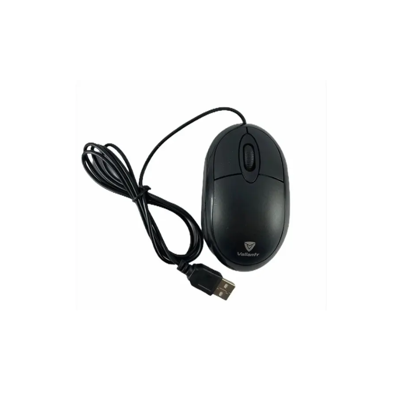
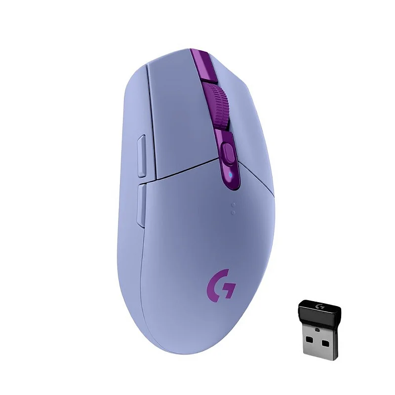
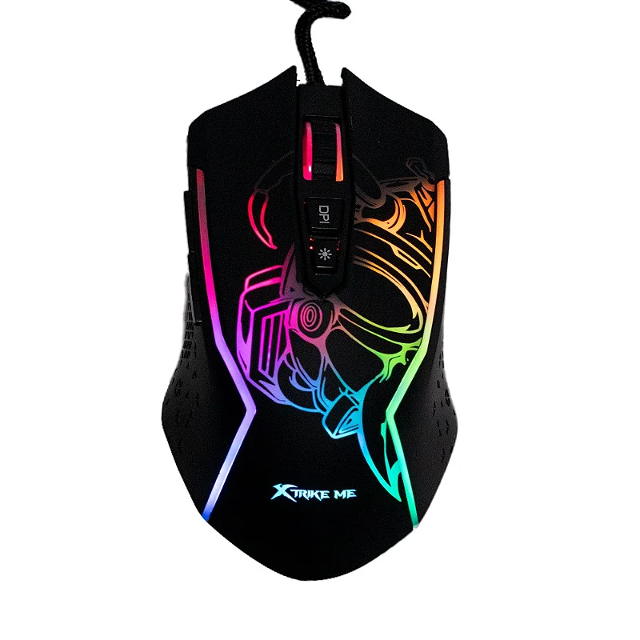

Catalogo de Produtos
Foto
Código
Descrição
Qtde em Estoque
Valor Unitario

1
Mouse Lazer com Fio Dell
5
R$ 179,00

2
Mouse Bluetooth Dell
6
R$ 338,00

3
Mouse Óptico USB preto 100
3
R$ 48,30
Descrição
Characteristica do produto
Especificações
Sensor óptico preciso com 1.600 DPI permite que voce trabalhe na maioria das superficies
Configuração rapida e facil com cabo de 1,5m
Design ambidestro, produzido para caber de forma natural e perfeita na palma da sua mão
Três botões integrados
Ampla compatibilidade: Windows e Mac
Avaliação do produto
José Aparecido
Muito bom
Joaquim Jorge
Bom